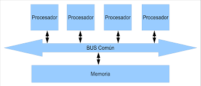
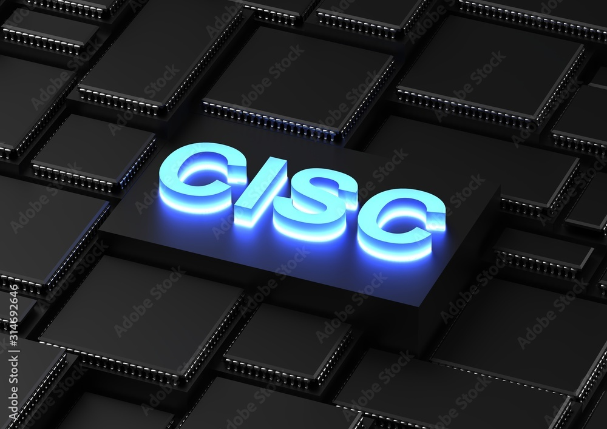
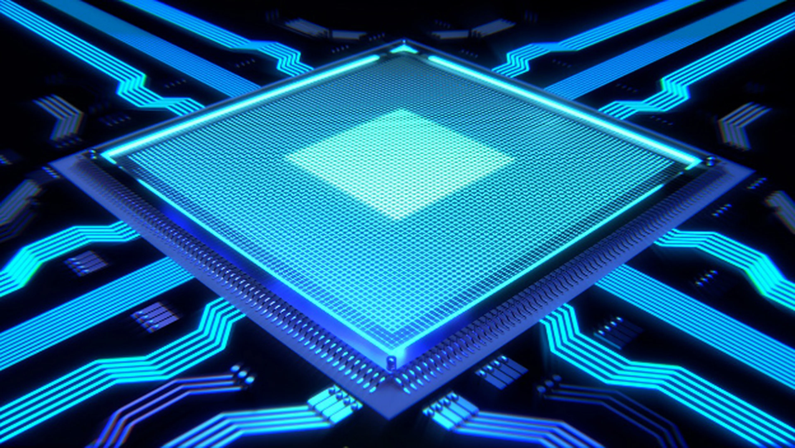
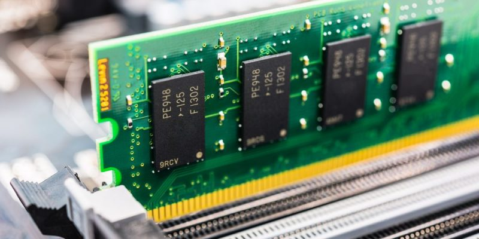
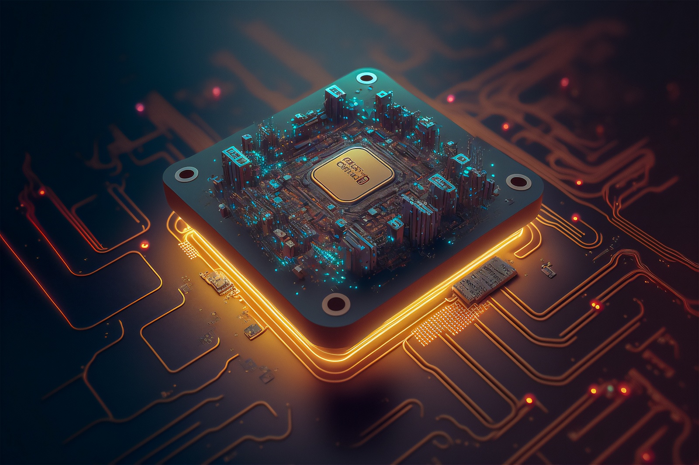
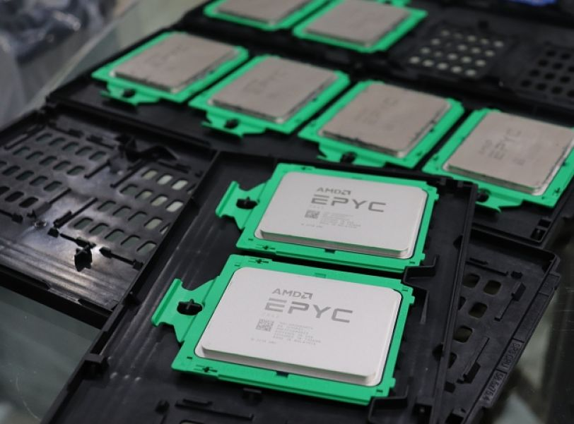
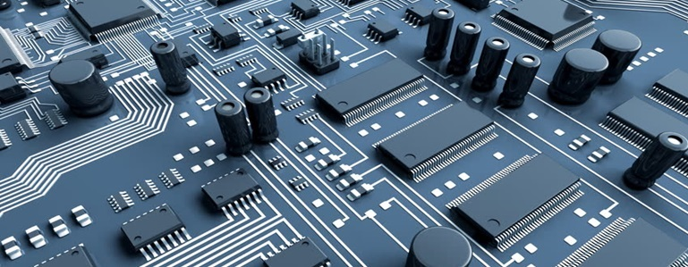

UNIDAD 1
MODELOS DE ARQUITECTURA DE COMPUTO
Arquitectura de computadoras Es el diseño y la organización de un sistema para un equipo de cómputo.
Es un modelo y descripción de cada función, así como los requerimientos y las implementaciones de diseño para varias
partes del equipo de cómputo.
Principalmente enfocamos en la unidad central de procesamiento lo conocemos como (CPU) el cual
trabaja internamente y accede a las direcciones de memoria
y a los sistemas de entrada salida, periféricos.
También suele definirse como la selección e interconexión de
los componentes de Hardware para crear computadoras según los requerimientos de funcionalidad, rendimiento y costo.
El equipo de cómputo recibe y envía la información a través de los periféricos por medio de los canales de distribución o buses (cableado físico de interconexión).
El CPU se encarga de procesar la información que le llega al equipo de cómputo.
El intercambio de información se tiene que hacer con los periféricos y el CPU.
Todas aquellos unidades de un sistema exceptuando el CPU se denomina periférico, por lo que el equipo
de cómputo tiene dos partes bien diferenciadas, que son: el CPU (se encarga de ejecutar programas y que está
compuesto por la memoria principal, la (ALU) unidad aritmética lógica y la (UC) unidad de control) y los periféricos
(que pueden ser de entrada, salida, entrada-salida
y las interconexiones).

1.1.1 CLASICAS

Está arquitecturas se desarrollaron en las primeras computadoras electromecánicas y de tubos de vacío.
Hay dos arquitecturas distintas relacionadas con el oso de distribución de la memoria arquitectura de Jonh Von Neumann y arquitectura Harvard
Arquitectura Von Neumann:
Tradicionalmente los sistemas de microprocesadores se basan en esta arquitectura, en la cual la unidad central de proceso (CPU), está conectada
a una memoria principal única donde se guardan las instrucciones del programa y los datos. A dicha memoria se accede a través de un sistema
interconexión de buses único (control, direcciones y datos).
En un sistema con arquitectura Von Neumann el tamaño de la unidad de datos o instrucciones está fijado por el ancho del bus que comunica
la memoria con la CPU. Así un microprocesador de 8 bits con un bus de 8 bits, tendrá que manejar datos e instrucciones de una o más unidades de
8 bits (bytes) de longitud.
Si tiene que ceder a una instrucción o datos de más de un byte de longitud, tendrá que realizar más de un acceso a la memoria. El tener un único
bus hace que el microprocesador sea más lento en su respuesta, ya que no puede buscar en memoria una nueva instrucción mientras no finalicen las
transferencias de datos de la instrucción anterior.
Las computadoras digitales convencionales presentan un aspecto Von Neumann. Este modelo consta de cinco componentes principales:
Unidad de Memoria
Unidad de Entrada/Salida
Unidad de Control
Unidad aritmetica Logica
Registros de Programas
Esta arquitectura utiliza los microcontroladores tiene la unidad central de proceso (CPU) conectada a dos memorias
(una con las instrucciones y otra con los datos) por medio de los dos buses diferentes.
Una de las memorias contiene solamente las instrucciones del programa (memoria de programa), y
la otra sólo almacenan datos (memoria de datos).
1.1.2 SEGMENTADAS
Es una de las tecnologías utilizadas para realizar la segmentación o paralelismo. Divide el procesador, en etapas, procesa una instrucción diferente en cada una y trabaja con varias a la vez.
Pueden trabajar de forma paralela, en diferentes instrucciones, utilizando una cola de instrucciones para su comunicación, denominado entubamiento. La técnica de implementación clave utilizada para hacer CPU.
La dependencia de datos y de control, que tiene como efecto la disminución del rendimiento del pipelining.
La segmentación de cauce (pipelining) es una forma efectiva de organizar el hardware del CPU para realizar más de una operación al mismo tiempo. Consiste en descomponer el proceso de ejecución de las instrucciones
en fases o etapas que permitan una ejecución simultánea. Las etapas están conectadas, cada una a la siguiente, para formar una especie de cauce las instrucciones se entran por un extremo, son procesadas a través de las etapas y salen por el otro. La productividad de la segmentación está determinada por la frecuencia con que una instrucción salga del cauce.

1.1.3 MULTIPROCESAMIENTO
Se denomina multiprocesador a un computador que cuenta con dos o más microprocesadores (CPUs).
La arquitectura NUMA, donde cada procesador tiene acceso y control exclusivo a una parte de la memoria.
La arquitectura SMP, donde todos los procesadores comparten toda la memoria.
Para que un multiprocesador opere correctamente necesita un sistema operativo especialmente diseñado para ello.
La arquitectura NUMA, donde cada procesador tiene acceso y control exclusivo a una parte de la memoria. La arquitectura SMP,
donde todos los procesadores comparten toda la memoria.
Los CPU de multiprocesamiento según Flynn se clasifican de la siguiente manera:
SISO : (Single Instruction, Single Operand) computadoras. Monoprocesador
SIMO : (Single Instruction, Multiple Operand) procesadores vectoriales, Exenciones MMX
MISO : (Multiple Instruction, Single Operand) No implementado
MIMO : (Multiple Instruction, Multiple Operand) sistemas SMP, Clusters, GPUs

SMP
En los sistemas SMP (Simetric Multiprocessing), varios procesadores comparten la misma
memoria principal y periféricos de Entrada /Salida, normalmente conectados por un bus común.
Se conocen como simétricos, ya que ningún procesador toma el papel de maestro y los demás de
esclavos, sino que todos tienen derechos similares en cuanto al acceso a la memoria y periféricos
y ambos son administrados por el sistema operativo. Pueden formarse con varios núcleos en un solo
circuito integrado o con varios circuitos integrados en una misma tarjeta madre.
CLUSTERS
Conjuntos de computadoras independientes conectadas en una red de área local o por un bus de
interconexión y que trabajan cooperativamente. Con un sistema de procesamiento paralelo o distribuido.
Es clave en su funcionamiento contar con un sistema operativo y programas de aplicación capaces
de distribuir el trabajo entre las computadoras de la red.
ANALISIS DE COMPONENTES
Los programas cada vez más grandes y complejos demandan mayor velocidad
en el procesamiento de información, lo que implica la elección de microprocesadores más rápidos y eficientes.
1.2.1 ARQUITECTURAS
Arquitecturas Cisc
En la arquitectura computacional, CISC es un modelo de arquitectura, en donde los microprocesadores
tienen un conjunto instrucciones que caracterizan por ser muy amplio y permitir operaciones complejas entre operandos,
situados en la memoria o en los registros internos.
Este tipo de arquitectura dificulta el paralelismo entre instrucciones, por lo que, en la actualidad, la mayoría de
los sistemas CISC de alto rendimiento implementan un sistema que convierte dichas instrucciones complejas en varias
instrucciones simples del tipo RISC, llamadas generalmente microinstrucciones.
VENTAJAS DEL CISC:

Reduce la dificultad de crear compiladores.
Permite reducir el costo total del sistema.
Reduce los costos de creación de software.
Mejora la compactación de código.
1.2.1.1 CPU
Se la suele llamar coloquialmente como microprocesador o simplemente procesador, y
puedes considerarla como el cerebro de cualquier dispositivo. Se encarga de procesar todas las
instrucciones del dispositivo, leyendo las órdenes y requisitos del sistema operativo, así como las
instrucciones de cada uno de los componentes y las aplicaciones.

CPU es la que se encarga de que todo funcione correctamente,
y de interpretar todo lo que quiere hacer el sistema operativo o los componentes,
estableciendo las conexiones y realizando todos los cálculos precisos para que funcione.
Cuanto más potente sea el procesador, más rápido podrá hacer las operaciones y más rápido
funcionará tu dispositivo en general.
Los CPUs modernos se pueden clasificar por sus características como:
Tamaño de la Unidad Aritmética Lógica (ALU).
Bus de conexión al exterior (8, 16, 32, 64 bits).
Si su arquitectura tiene cauce (pipeline).
Si son de arquitectura CISC o RISC.
Si son Von Newmann o Harvard.
1.2.1.2 ALU
Es un circuito logico digital que realiza operaciones aritmeticas y logicas entres los datos de un circuito: suma resta,
division y multiplicacion, asi como establece comparaciones logicas a traves de los condicionales logicos "si", "no", y "o".
Todos los microprocesadores incluyen al menos una ALU, que varia su poder y complejidadsegún su finalidad Además, la ALU
cuenta con una serie de registros para almacenar los datos y bits de informacion sobre los resultados.
Operaciones a realizar por la ALU:
Suma aritmetica
Resta aritmetica
peraciones lógicas
Desplazamiento o rotación
1.2.1.3 REGISTROS
Los registros que encuentran dentro de cada procesador su función principales almacenar los valores de cada uno de los datos,comandos,
instrucciones o estados binarios que son los que ordenan qué dato debe procesarse, así como la forma en la que se debe realizar.
Un registro no deja de ser una memoria de velocidad alta y con poca capacidad. Cada registro puede contener una instrucción, una
dirección de almacenamiento o cualquier tipo de dato.
Cada procesador tiene varias asignaciones o tareas que debe de realizar para el manejo de la información. La información es
recibida generalmente en código binario, procedente de las aplicaciones para, después, procesarlos de una forma determinada.
1.2.1.4 BUSES

Un bus se puede definir como una línea de interconexión portadora de información, constituida por varios hilos conductores
(en sentido físico) o varios canales (en sentido de la lógica), por cada una de las cuales se transporta un bit de información.
Existen dos tipos primordiales de buses (conexiones) para el envío de la información: bus paralelo o serial:
Bus paralelo: Es un bus en el cual los datos son enviados por bytes al mismo tiempo, con la ayuda de varias líneas que
tienen funciones fijas. La cantidad de datos enviada es bastante grande con una frecuencia moderada y es igual al ancho
de los datos por la frecuencia de funcionamiento.
Bus serie: este los datos son enviados, bit a bit y se reconstruyen por medio de registros o rutinas de software.
Está formado por pocos conductores y su ancho de banda depende de la frecuencia.
Bus de direcciones: unidireccional debido a que la información fluye es una solo sentido, del CPU a la memoria ó a
los elementos de entrada y salida. El CPU puede colocar niveles lógicos en las n líneas de dirección, con la cual se
genera 2n posibles direcciones diferentes. Cada una de estas direcciones corresponde a una localidad de la memoria ó
dispositivo de E / S.
1.2.2 MERORIA
Es un dispositivo que puede mantenerse en por lo menos dos estados estables por un cierto periodo de tiempo.
Cada uno de estos estados estables puede utilizarse para representar un bit. A un dispositivo con la capacidad
de almacenar por lo menos un bit se le conoce como celda básica de memoria.
Un dispositivo de memoria completo se forma con varias celdas básicas y los circuitos asociados para poder leer
y escribir dichas celdas básicas, agrupadas como localidades de memoria que permitan almacenar un grupo de N bits.

1.2.2.2 MEMORIA PRINCIPAL
La memoria del semiconductor utiliza en su arquitectura circuitos integrados basados en semiconductores para almacenar
información. Un chip de memoria de semiconductor puede contener millones de minúsculos transistores o condensadores.
Existen memorias de semiconductor de ambos tipos: volátiles y no volátiles.
En las computadoras modernas, la memoria principal consiste casi exclusivamente en memoria de semiconductor volátil y
dinámica, también conocida como memoria dinámica de acceso aleatorio o más comúnmente RAM (Random Access Memory).
1.2.2.3 MEMORIA CACHE

Es la memoria de acceso rápido de una computadora, que guarda temporalmente las últimas informaciones procesadas.
La memoria caché es un búfer especial de memoria que poseen las computadoras, que funciona de manera similar a la
memoria principal, pero es de menor tamaño y de acceso más rápido. Es usada por el procesador para reducir el tiempo
de acceso a datos ubicados en la memoria principal que se utilizan con más frecuencia.
La caché es una memoria que se sitúa entre la unidad central de procesamiento (CPU) y la memoria de acceso aleatorio
(RAM) para acelerar el intercambio de datos. Cuando se accede por primera vez a un dato, se hace una copia en la caché;
los accesos siguientes se realizan a dicha copia, haciendo que sea menor el tiempo de acceso medio al dato.
1.2.3 MANEJO DE ENTRADA Y SALIDA
1.2.3.1 MODULOS DE ENTRADA Y SALIDA
Para poder hacer una operación entre el procesador y un periférico, se necesita conectar estos dispositivos a la computadora
y gestionar de manera correcta la transferencia de datos. Esto, se puede realizar mediante los sistemas de módulos de Entrada/Salida.
Estos módulos están conectados con el procesador y la memoria principal, cada uno controla uno o más dispositivos externos.
1.2.3.2 ENTRADA Y SALIDA PROGRAADA
La entrada-salida programada (también entrada / salida programada , E / S programada , PIO ) es un método de transmisión
de datos , a través de entrada / salida (E / S), entre una unidad central de procesamiento (CPU) y un dispositivo periférico ,
como un adaptador de red o un dispositivo de almacenamiento Parallel ATA (PATA, anteriormente AT Attachment (ATA)). Cada
transferencia de elementos de datos se inicia mediante una instrucción en el programa, que involucra a la CPU para cada transacción.
Por el contrario, en las operaciones de acceso directo a memoria (DMA), la CPU no participa en la transferencia de datos.
1.2.3.3 ENTRADA Y SALIDA MEDIANTE INTERRUPCIONES
Esta técnica pretende evitar que el procesador pare o haga trabajo improductivo, mientras que espera a que el periférico esté
preparado para hacer una nueva operación. El hardware de la computadora, necesita tener un conjunto de líneas de control del bus
del sistema y de petición de interrupción.
Funcionamiento:
ENMASCARABLES (se pueden dejar de atender por software)
NO ENMASCARABLES (siempre atendidas)
Dos formas de conocer la dirección/posición (vector) donde se encuentra la rutina de servicio de la interrupción
Vector de interrupciones siempre FIJO ó el periférico suministra el vector de interrupción
1.2.3.4 ACCESO DIRECTO A MEMORIA
El DMA (acceso directo a la memoria) permite que el dispositivo de red mueva los datos del paquete directamente a la
memoria del sistema, reduciendo la utilización de la CPU. Sin embargo, la frecuencia y los intervalos aleatorios en
los cuales los paquetes llegan no permiten que el sistema ingrese un estado de energía más bajo. El coalescentes DMA
permite que el NIC recoja los paquetes antes de que inicie un evento DMA. Esto puede aumentar la latencia de la red,
pero también aumenta las probabilidades de que el sistema consuma menos energía. Los adaptadores y dispositivos de red
basados en el controlador Ethernet Intel® I350 (y controladores posteriores) Asistencia la fusión de DMA.
1.2.3.5 CANALES DE ENTRADA Y SALIDA
EL canal de E/S es una extensión del bus del 8088. Este canal contiene un bus de datos bidireccinal de 8 bits,
20 líneas de dirección, 6 niveles de interrupción, líneas de control para las operaciones de lectura y escritura
para la memoria y la E/S, líneas de control de 3 canales de DMA, y líneas de control para el tiempo de refresco de memoria.
Los canales de E/S proporcionan una línea Ready para permitir operaciones con dispositivos de memoria o de E/S lentos.
Cuando la línea no está activada por un dispositivo, el procesador genera ciclos de lectura y esritura a memoria que toman
cuatro ciclos de 210 ns (esto es, 840 ns) por byte. Todos los ciclos de lectura y escritura a E/S generados por el procesador
requieren de cinco ciclos de 210 ns de reloj (1.05 ms) por byte. Todas las transferencias DMA requieren de cinco ciclos de reloj
para un ciclo de tiempo de 1.05 ms por byte. Los ciclos de reloj se presentan aproximadamente cada 15 m sec y requieren de cinco
ciclos de reloj.

1.2.4 BUSES
En arquitectura de computadores, el bus es un sistema digital que transfiere datos entre los componentes de una computadora.
Está formado por cables o pistas en un circuito impreso, dispositivos como resistores y condensadores, además de circuitos
integrados.
Un bus es una trayectoria por la cual viajan los datos en una computadora para comunicar los distintos dispositivos entre sí.
Los principales buses que se encuentran dentro de una PC son: los Buses del micro-procesador, los Buses de memoria y los Buses
del sistema.
1.2.4.1 TIPOS DE BUSES
Existen dos tipos de transferencia en los buses:
Serie: El bus solamente es capaz de transferir los datos bit a bit. El bus tiene un único cable que transmite la información.
Paralelo: El bus permite transferir varios bits simultáneamente, por ejemplo 8 bits.
Aunque en primera instancia parece mucho más eficiente la transferencia en paralelo, esta presenta inconvenientes:
La frecuencia de reloj en el bus paralelo tiene que ser más reducida.
La longitud de los cables que forman el bus está limitada por las posibles interferencias, el ruido y los retardos en la señal.
1.2.4.3 ESTRUCTURA DE BUSES
Un bus es un medio compartido de comunicación constituido por un conjunto de líneas (conductores) que conecta las
diferentes unidades de un computador. La principal función de un bus será, pues, servir de soporte para la realización
de transferencias de información entre dichas unidades. La unidad que inicia y controla la transferencia se conoce como
master del bus para dicha transferencia, y la unidad sobre la que se realiza la transferencia se conoce como slave. Los
papeles de master y slave son dinámicos, de manera que una misma unidad puede realizar ambas funciones en transferencias
diferentes. Por ejemplo, una unidad de DMA hace de slave en la inicialización que realiza el master, la CPU, para una
operación de E/S. Sin embargo, cuando comienza la operación, la unidad de DMA juega el papel de master frente a la memoria,
que en esta ocasión hace de slave.
1.2.4.4 JERARQUIA DE BUSES

Los computadores modernos tienen por lo menos 4 buses diferentes (bus interno, bus del procesador,
bus del caché, bus de memoria, bus local de E/S, bus estándar de E/S). Se les considera una jerarquía,
porque cada bus se conecta al nivel superior a él dentro del computador, integrando así todas las partes
del computador. Cada uno es generalmente más lento que el que se encuentra sobre él, siendo el bus del procesador el
más rápido tratándose de que este es el dispositivo más rápido del computador. Para mejorar el rendimiento del bus,
las jerarquías de buses fueron implementadas cada vez más.
1.2.5 INTERRUPCIONES
Una interrupción consiste en un mecanismo que le permite al hardware la invocación de una rutina fuera del
control del programa que está siendo ejecutado. Es una señal recibida por el procesador de una computadora,
que indica que debe «interrumpir» el curso de ejecución actual y pasar a ejecutar código específico para tratar esta situación.
Una interrupción es una suspensión temporal de la ejecución de un proceso, para pasar a ejecutar una subrutina de servicio de interrupción,
la cual, por lo general, no forma parte del programa, sino que pertenece al sistema operativo o al BIOS. Una vez finalizada dicha subrutina,
se reanuda la ejecución del programa.
Las interrupciones son generadas por los dispositivos periféricos habilitando una señal del CPU (llamada IRQ del inglés "interrupt request")
para solicitar atención del mismo. Por ejemplo. cuando un disco duro completa una lectura solicita atención al igual que cada vez que se
presiona una tecla o se mueve el ratón.
Autor: CRUZ CAMPOS ANDREA LIZBETH No.Control: 20051165